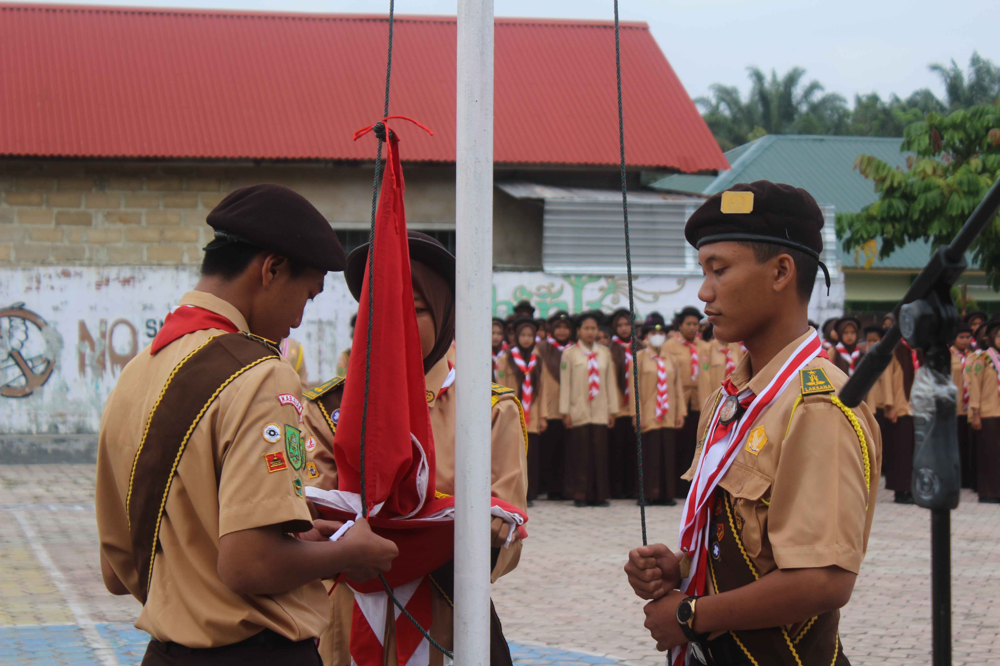

Gerakan Kepanduan Praja Muda Karana, lebih dikenal sebagai Gerakan Pramuka Indonesia, adalah nama organisasi pendidikan nonformal yang menyelenggarakan pendidikan kepanduan di Indonesia. Kata "Pramuka" merupakan singkatan dari Praja Muda Karana, yang memiliki arti Jiwa Muda yang Suka Berkarya. Tapi sebelum singkatan ini ditetapkan, kata Pramuka asalnya diambil oleh Sultan Hamengkubuwono IX dari kata "pramuka" (ejaan Jawa latin, dibaca pramuko) yang berarti pasukan terdepan dalam perang. Dalam Kamus Bausastra Jawa karya W.J.S Poerwadarminta tahun 1939, pramuka berarti pangarep atau lelurah, yang artinya pemimpin Pramuka kini sudah menjadi ekstrakurikuler wajib di setiap sekolah, khusunya pada jenjang Sekolah Menengah Akhir (SMA). Hal ini di kukuhkan melalui peraturan Menteri Pendidikan dan Kebudayaan Nomor 63 Tahun 2014 Tentang Pendidikan Kepramukaan sebagai Ekstrakurikuler wajib pada pendidikan Dasar dan Menengah. Pada dasarnya, pendidikan kepramukaan dilaksanakan untuk menginternalisasikan nilai ke utuhan, kebudayaan, kepimimpinan, kebersamaan, sosial, kecintaan alam, dan kemandirian pada peserta didik.
Acara yang dilaksanakan pada 27 Agustus 2022,dalam meperingati tahun baru islam dan alhamdulillah sekolah kita SMA NEGERI 1 DAYUN berhasil meraih juara 1 dalam lomba PBB dan juara 2 lomba sholat jenazah putri